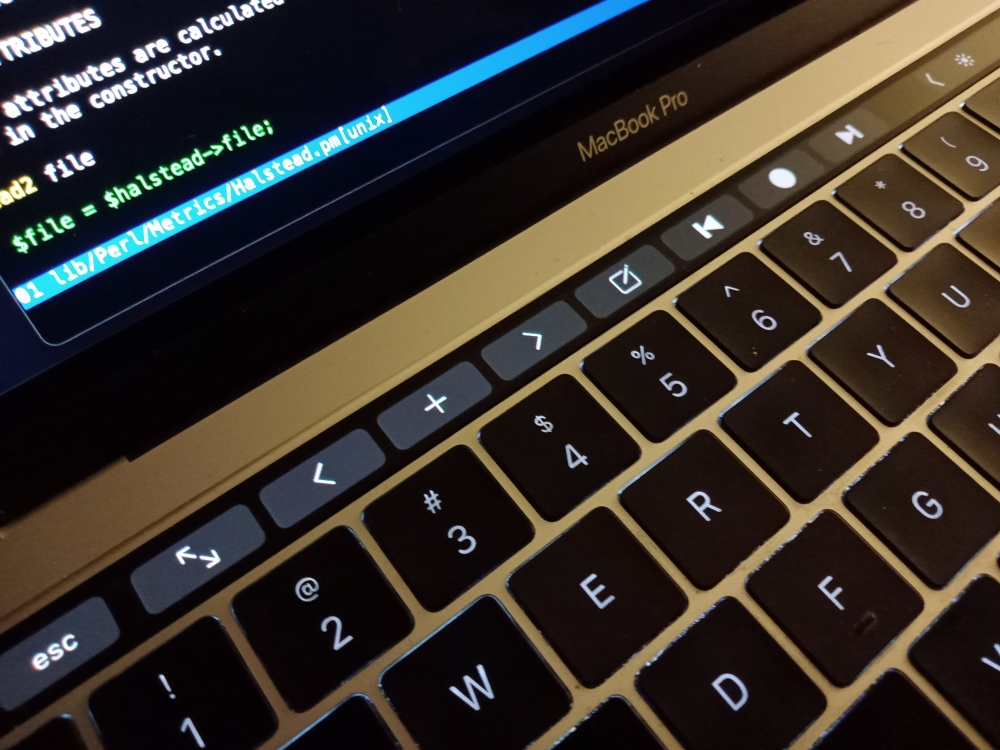

MacVim and the Apple Touch Bar
You can add custom buttons to the Apple Touch Bar when using MacVim.
From this gist, I learned about how to customize the touch bar in vim. This is something that I have desired forever. That is, having my own, personal vim buttons. You can do this with gamer keypads, even foot pedals, etc. But the touch bar - Shiny!
Anyway, just add a line like this to your .vimrc file:
an icon=NSTouchBarComposeTemplate TouchBar.NewBuf :e .<CR>
For a named button, just don't include the icon=... setting:
an TouchBar.NewBuf :e .<CR>
These add touchbar buttons that open the "vim buffer explorer."
Save and reopen MacVim. Voila!

This shows (on my 2017 model Touch Bar) the following "virtual" buttons: Escape, Full-screen, Previous tab, Open new tab, Next tab, Open the vim explorer, Previous git hunk, Toggle the fabulous gitgutter plugin on or off, Next git hunk. These are actions that I need to do periodically in vim. And here are the "Touch Bar Glyphs and Images" from the Apple Human Interface Guidelines, that you can use.
There is certainly more to this than I have covered. So that is up to you, the intrepid developer!
(By the way, I don't think you can remove the MacVim "Full-screen" button.)